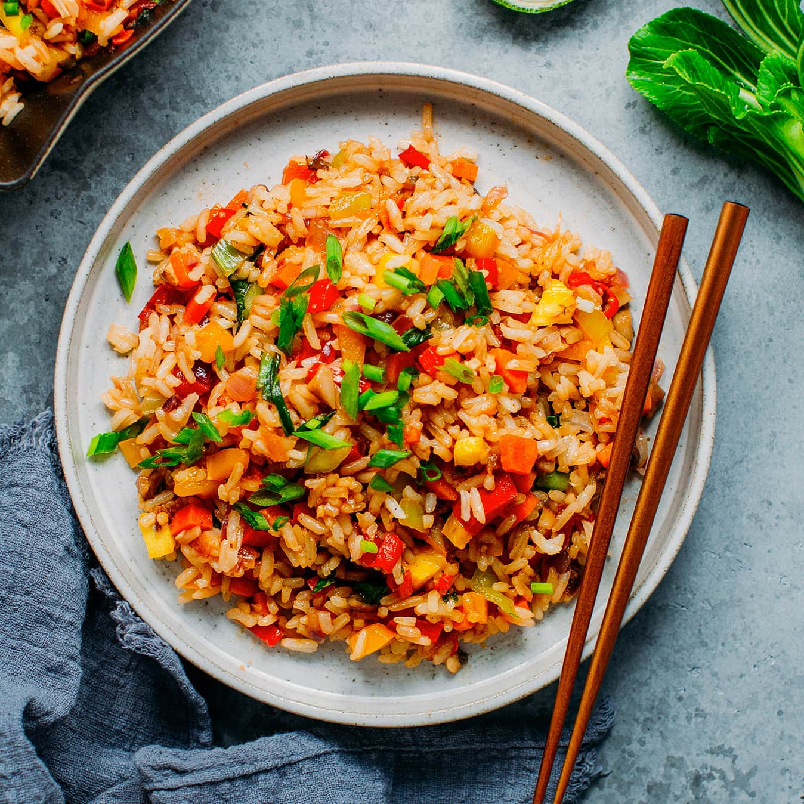

Fried Rice

Fried Rice
A versatile dish made from stir-frying cooked rice in a wok or pan. It's commonly mixed with other ingredients such as eggs, vegetables, seafood, or meat, and seasoned with soy sauce.
Ingredients:
- Cooked Rice (cold, leftover rice works best)
- Eggs
- Vegetables (e.g., Peas, Diced Carrots, Corn, Diced Onions)
- Soy Sauce
- Cooking Oil
- Protein (optional: Diced Chicken, Shrimp, or Tofu)
Steps:
- Heat oil in a large pan or wok over medium-high heat.
- Add onions and other hard vegetables (like carrots) and stir-fry for a minute.
- Push vegetables to one side, pour beaten eggs onto the empty side, and scramble.
- Add the cold rice to the pan. Break it up with a spoon.
- Stir-fry the rice, mixing it with the eggs and vegetables.
- Add peas, corn, and any pre-cooked protein.
- Add soy sauce and mix until everything is evenly colored and hot.